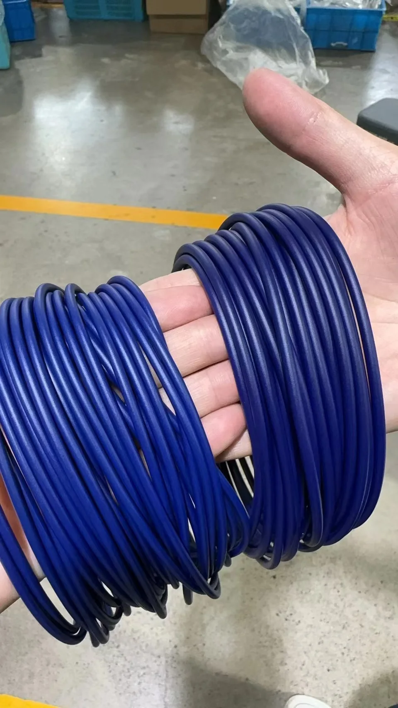
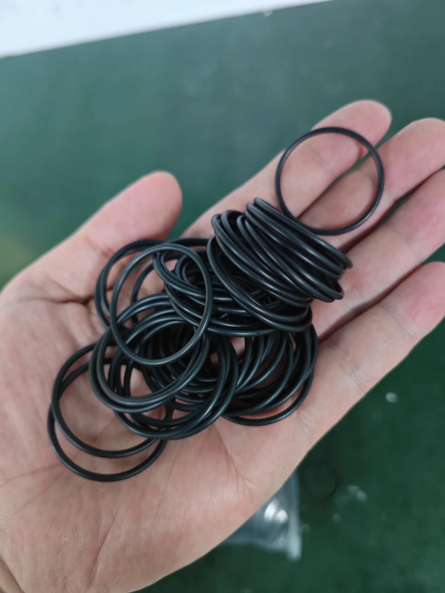
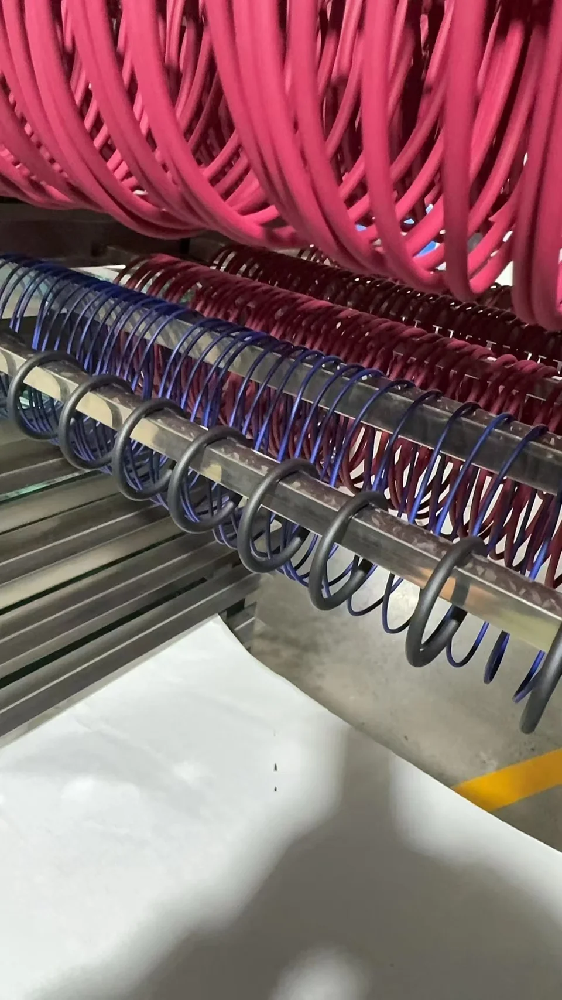
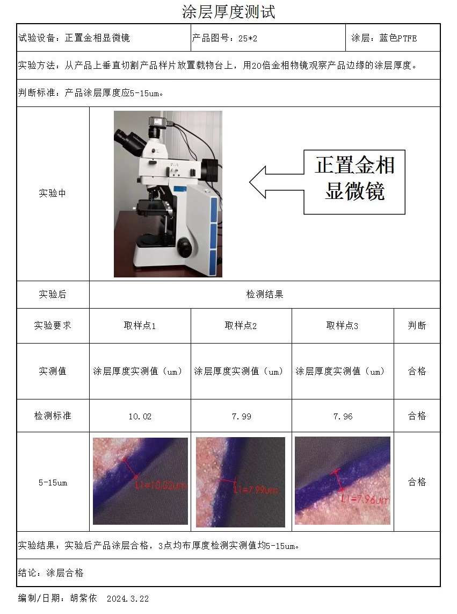

Joints toriques revêtus de PTFE pour l’étanchéité des raccords tournants
Un traitement de surface en option pour les joints toriques associés aux joints composites à bague de glissement, selon les exigences du fluide de procédé.
Begapunk propose des joints toriques revêtus de PTFE en option pour les applications de raccords tournants adaptées. Le revêtement ajoute une couche protectrice à la surface de l’élastomère. Cette configuration est choisie en fonction de l’application et n’est pas fournie de série sur tous les modèles.
Parlons de votre fluide Voir le procédé de revêtement
Pourquoi ajouter un revêtement PTFE ?
Dans un joint composite à bague de glissement, le joint torique assure la précharge et le soutien élastique. Le choix de l’étanchéité doit donc tenir compte à la fois de la bague de glissement et de la compatibilité du joint torique qui la soutient avec le fluide utilisé.
Le PTFE, ou polytétrafluoroéthylène, résiste à de nombreux produits chimiques. Un revêtement PTFE est une option de traitement de surface à envisager lors du choix d’un joint torique pour un fluide de procédé donné.
Avant revêtement. Pendant le séchage. Après revêtement.
Ces photos montrent les joints toriques sans revêtement, pendant le séchage après application du revêtement et à l’issue du procédé.

Joints toriques non revêtus
Les joints toriques avant le traitement de surface au PTFE.

Séchage après revêtement
Joints toriques revêtus sur des supports pendant le séchage.
Joints toriques revêtus de PTFE
Joints toriques finis avec un revêtement de surface PTFE bleu.
L’épaisseur du revêtement en détail
Le rapport de contrôle du fournisseur porte sur un échantillon revêtu de PTFE bleu, repéré 25 × 2. L’épaisseur locale du revêtement a été mesurée sur une coupe à l’aide d’un microscope métallographique.
La plage d’épaisseur spécifiée pour cet échantillon était de 5–15 µm. Les trois points de mesure se situaient dans cette plage.
| Point de mesure | Épaisseur |
|---|---|
| Point 1 | 10,02 µm |
| Point 2 | 7,99 µm |
| Point 3 | 7,96 µm |

Quel fluide votre raccord tournant doit-il transférer ?
Indiquez le fluide et sa concentration, la température de service, la pression et les conditions de fonctionnement. Begapunk peut étudier le matériau du joint torique, l’option de revêtement et la configuration d’étanchéité pour votre application.